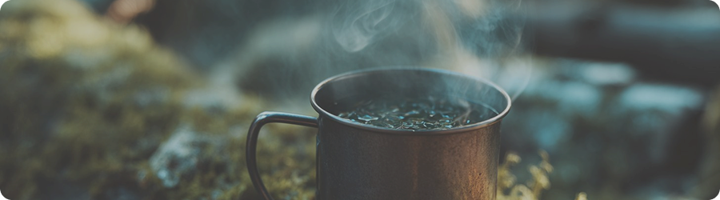

Чай
Лесные травы для заварки
Что важно знать о лесных травах
Лесные травы — это простой способ сделать прогулку более уютной и восстановить силы. Многие растения подходят для заварки и обладают мягким вкусом и ароматом.
Важно помнить, что не все растения безопасны. Даже знакомые на вид травы могут отличаться, поэтому лучше использовать только те, в которых ты уверен.
Простота и осторожность — основа: используй только знакомые растения и не экспериментируй в лесу.
Что может рассказать лес о травах
Травы редко растут случайно. Обычно они появляются там, где есть подходящий свет, влага и пространство.
На опушках и полянах растения получают больше света — поэтому их больше и они ароматнее. В глубине леса трав меньше, но они мягче по вкусу и менее насыщенные.
По этим признакам можно понять, где искать подходящие растения и какие из них лучше использовать для чая.
Даже знакомые растения могут выглядеть по-разному. Используй только те травы, в которых уверен. Если есть сомнения — лучше не собирать и не заваривать.
Где чаще всего встречаются травы
15%
Вдоль троп
20%
Лесные поляны
30%
Участки
с хорошим светом
35%
Опушки леса
Как понять, что трава подходит
Хорошие травы выглядят свежими, без повреждений и признаков загрязнения. У них выраженный, но не резкий запах.
Лучше выбирать молодые листья и избегать растений, растущих рядом с дорогами или в местах с активным движением людей.
Со временем появляется навык — ты начинаешь быстрее отличать подходящие растения от случайных.
Где безопаснее собирать травы
Наиболее безопасные места — участки вдали от дорог и популярных маршрутов.
Опушки и светлые зоны дают хороший баланс: достаточно света и при этом относительно чистая среда.
Открытые пространства и зоны у троп требуют больше внимания — там выше риск загрязнения.
Как заварить чай в лесу
01
Подготовь воду
02
Собери травы
03
Дай настояться
04
Отрегулируй вкус
Когда лучше не использовать травы
Если ты не уверен в растении — лучше не использовать его. Также не стоит собирать травы рядом с дорогами, тропами с большим потоком людей или в загрязнённых местах.

Лес становится уютнее
Чай из лесных трав — это способ остановиться, согреться и замедлить ритм прогулки. Даже базовые знания делают этот процесс простым и безопасным.